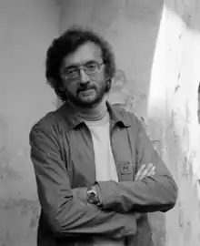
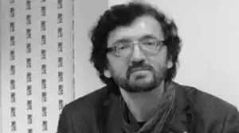
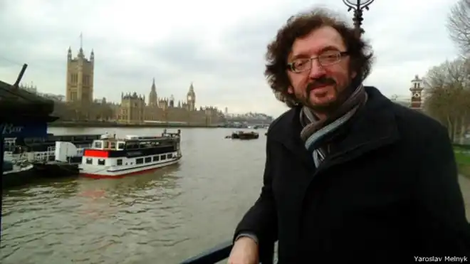
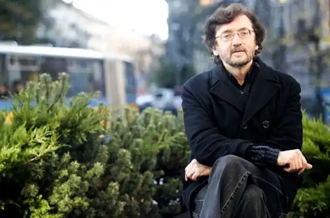

Мельник Ярослав Йосипович
(Нар. 6 лютого 1959 р.)
Письменник, філософ, критик Лауреат багатьох міжнародних літературних премій Ярослав Мельник народився у селі Смига Дубенського району Рівненської області. Закінчив українську філологію Львівського університету та аспірантуру Літературного інституту ім.М.Горького. Живе у Литві та Франції. Твори перекладалася англійською, французькою, німецькою, італійською, румунською, хорватською, російською та іншими мовами. Роман "Парії раю" видало французькою мовою одне з найбільших французьких видавництв Robert Laffont. Книжки Ярослава Мельника потрапляли в короткі списки "Книги року" в Литві, були номіновані на Європейську літературну премію. Автор працює в жанрі драматургії (п'єса "Імператор", з 1998 р. йде в російських театрах). Книжки: 1.Сила вогню і слова : літературні портрети, 1991 2.Рідна : поезії, 1992 3.Gyvenimas be globos : філософські есеї, 1994 4.Свобода, или грех : філософські есеї, 1996 5.Les parias d'Eden : роман, 1997 6.Просто цветок : роман, 2001 7.Rojalio kambarys : повісті та оповідання, 2004. 8.Pasaulio pabaiga : повісті та оповідання, 2006. 9.Labai keistas namas : 88 романів: філософські мініатюри, 2008. 10.Tolima erdvė : роман, 2008. 11.Kelias į rojų: сюрреалістичні повісті, оповідання, роман, 2010, номінована на Європейську літературну премію 12.Телефонуй мені, говори зі мною : повісті, оповідання, роман, 2012 13.Paryžiaus dienoraštis (Паризький щоденник) : есеї, 2013 Рисами творчості автора є сугестивність, психологізм, щільна візуалізація, сюрреалізм, позачасовість, універсальність тем. Автор тяжіє до містицизму і неосимволізму. Нагороди: 1.1996 р. — лауреат конкурсу "Найкраще оповідання року" 2.2004 р. Приз "Поза рамками/без табу" на конкурсі короткої прози 3.2007 р. Інститут літератури АН Литви включив книгу "Pasaulio pabaigą" в 12 найбільш творчих книг 2006 року. 4.2007 р. книга "Pasaulio pabaiga"включена в короткий список (5 книг) "Книги року 2006" 5.2008 р. — присуджена літературна премія ім. Кунчінаса 6.2008 р. книга "Labai keistas namas" включена в довгий список "Книги року 2007" 7.2009 р. роман "Tolima erdvė" включений в короткий список "Книги року 2008" 8.2009 р. — перша премія на конкурсі "Краще оповідання року" 9.2011 р. Інститут літератури АН Литви включив книгу в "Kelias į rojų" у "12 найбільш творчих книг року". 10.2011 р. книга "Kelias į rojų" номінована на Європейську літературну премію 11.2011 р. книга "Kelias į rojų" включена в довгий список "Книги року 2010" (Литва) 12.2012 р. книга "Телефонуй мені, говори зі мною" включена в короткий список "Книги року 2012" (Україна)